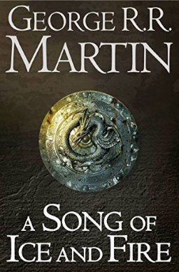
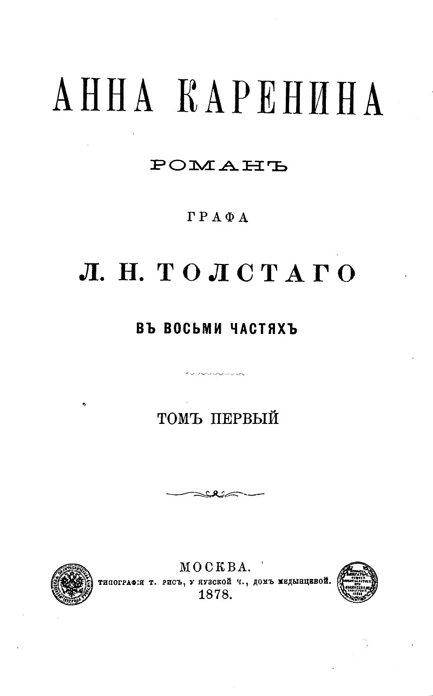

| NAME |
COVER |
AUTHOR |
SUMMARY |
| A Song of Ice and Fire |
 |
George R. R. Martin |
A Song of Ice and Fire depicts a violent world, largely without magic and dominated
by political realism. What little supernatural power that remains is confined to
the margins of the known world. Moral ambiguity pervades the books and their stories
continually raise questions concerning loyalty, pride, human sexuality, piety, and
the morality of violence. |
| Anna Karenina |
 |
Leo Tolstoy |
The novel deals with themes of betrayal, faith, family, marriage, Imperial Russian society,
desire, and rural vs. urban life. The story centers on an extramarital affair between Anna
and dashing cavalry officer Count Alexei Kirillovich Vronsky that scandalizes the social circles
of Saint Petersburg and forces the young lovers to flee to Italy in a search for happiness,
but after they return to Russia, their lives further unravel. |
| Foundation |
 |
Isaac Asimov |
Foundation is a cycle of five interrelated short stories, first published as a single book by
Gnome Press in 1951. Collectively they tell the early story of the Foundation, an institute
founded by psychohistorian Hari Seldon to preserve the best of galactic civilization after the
collapse of the Galactic Empire. |
| The Kite Runner |
 |
Khaled Hosseini |
The Kite Runner is the first novel by Afghan-American author Khaled Hosseini. Published in 2003
by Riverhead Books, it tells the story of Amir, a young boy from the Wazir Akbar Khan district of
Kabul. The story is set against a backdrop of tumultuous events, from the fall of Afghanistan's
monarchy through the Soviet invasion, the exodus of refugees to Pakistan and the United States,
and the rise of the Taliban regime. |